Visualizacoes do picking - coocorrencia
Mapas de rota para todas as waves. Caminhoes 1, 2 e 3 aparecem em vermelho, azul e verde; os graficos temporais mostram todas as waves e somam as distancias de todos os caminhoes. O grafico comparativo distingue abc_sku, random e coocorrencia por cor.
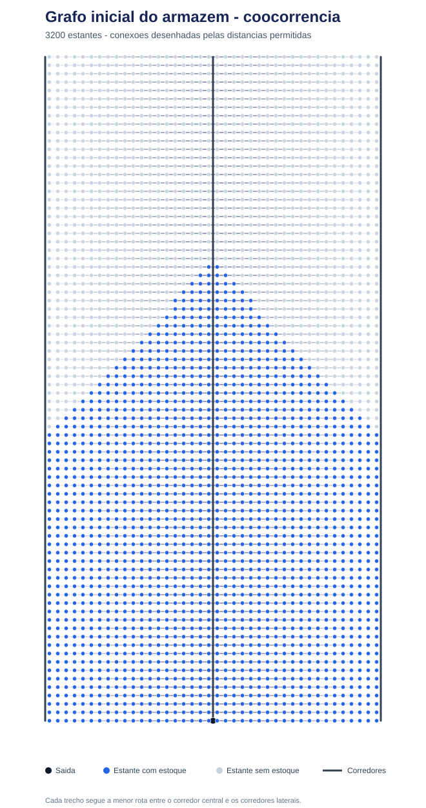
grafo_inicial_coocorrencia
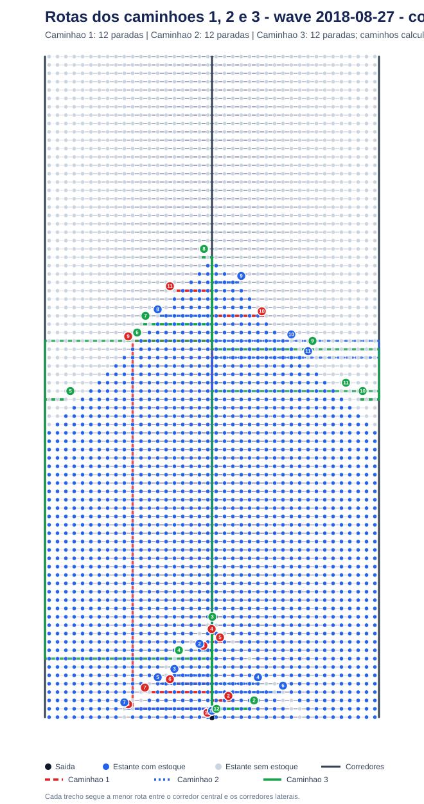
grafo_wave_2018-08-27_caminhoes_1_2_3_coocorrencia
grafo_wave_2018-09-03_caminhoes_1_2_3_coocorrencia
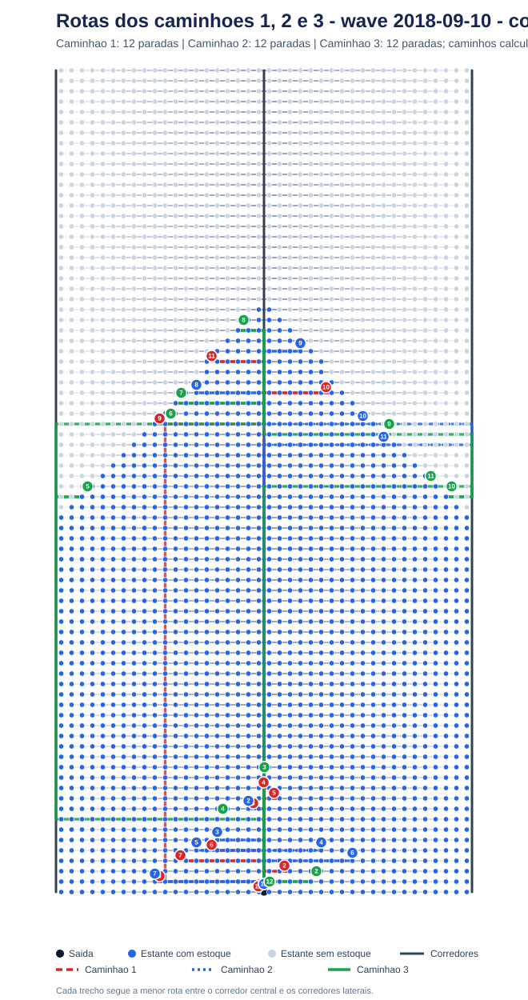
grafo_wave_2018-09-10_caminhoes_1_2_3_coocorrencia
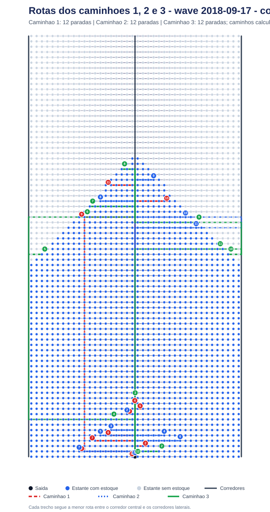
grafo_wave_2018-09-17_caminhoes_1_2_3_coocorrencia
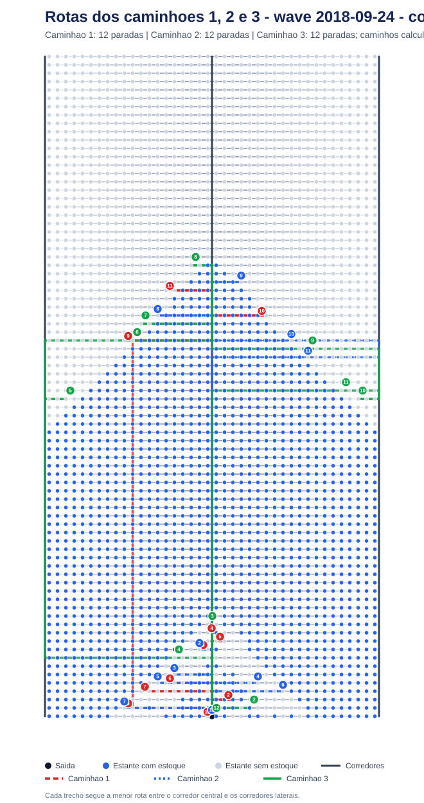
grafo_wave_2018-09-24_caminhoes_1_2_3_coocorrencia
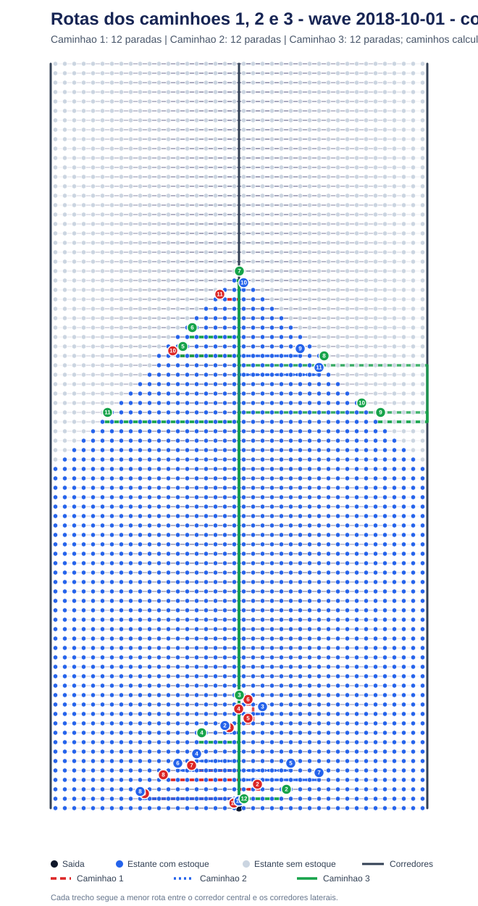
grafo_wave_2018-10-01_caminhoes_1_2_3_coocorrencia
grafo_wave_2018-10-08_caminhoes_1_2_3_coocorrencia
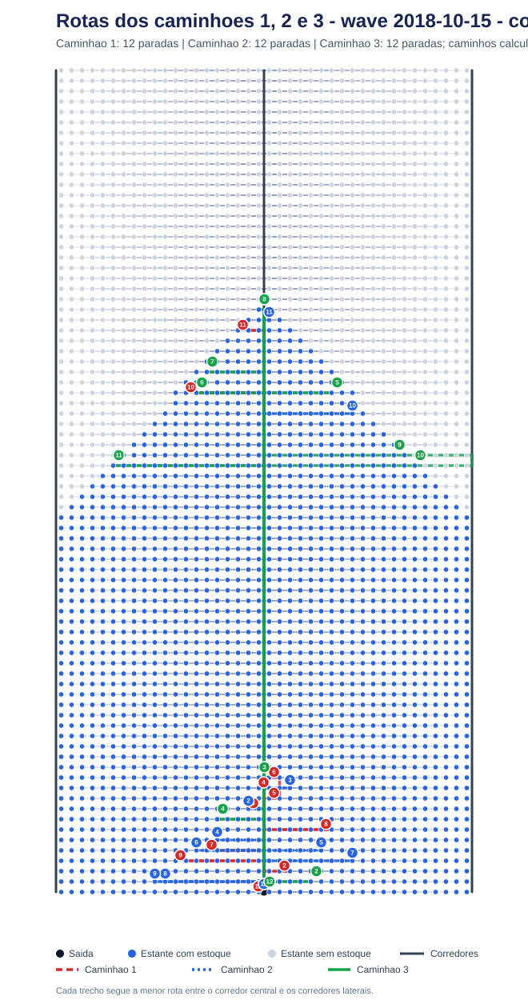
grafo_wave_2018-10-15_caminhoes_1_2_3_coocorrencia
grafo_wave_2018-10-22_caminhoes_1_2_3_coocorrencia
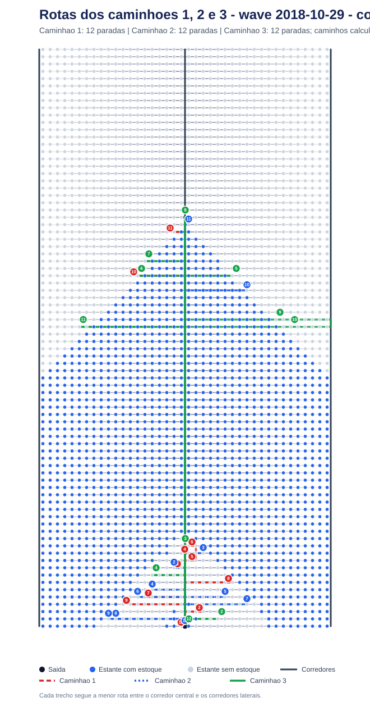
grafo_wave_2018-10-29_caminhoes_1_2_3_coocorrencia
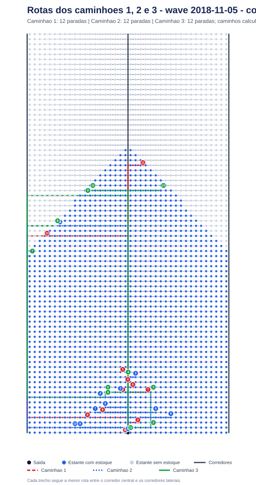
grafo_wave_2018-11-05_caminhoes_1_2_3_coocorrencia
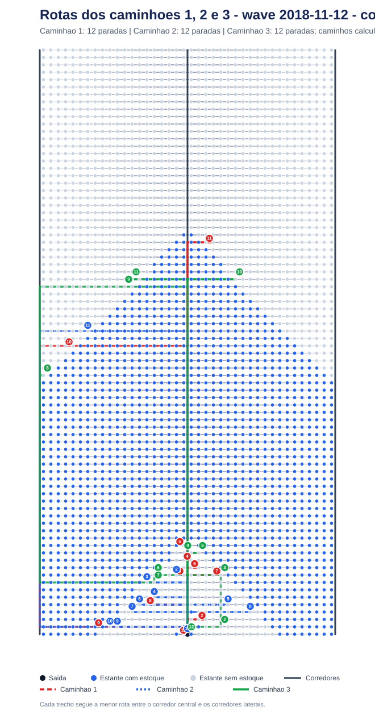
grafo_wave_2018-11-12_caminhoes_1_2_3_coocorrencia
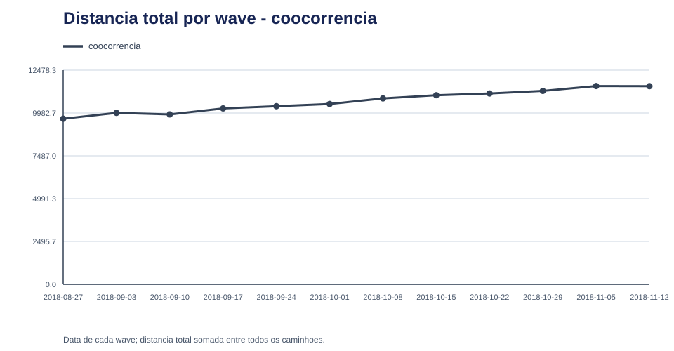
distancia_temporal_coocorrencia